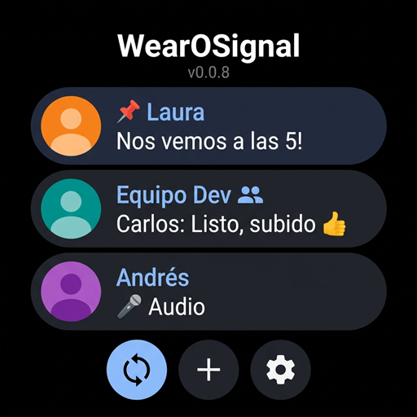
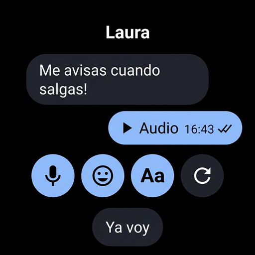
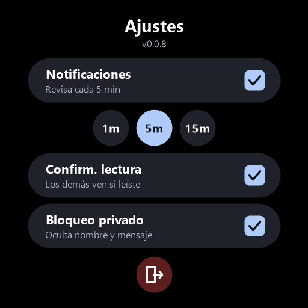

WearOSignal
Cliente independiente de Signal diseñado específicamente para relojes Wear OS. Lee tus chats, ancla favoritos, responde con notas de voz en vivo, emojis favoritos, respuestas rápidas y visualiza fotos, stickers, GIFs animados y videos directo desde tu muñeca.



Funciones diseñadas para tu reloj
Pensado para pantallas circulares, interacción rápida con una sola mano y consumo responsable de batería.
Lista de chats y hasta 3 anclados
Tarjetas claras con avatar, último mensaje y soporte de bisel giratorio, separadas de los 3 botones circulares. Mantén presionado para anclar (máx. 3) o eliminar un chat.
Notas de voz con ondas en vivo
Grabación AAC/M4A con visualizador dinámico de 13 barras reactivas al micrófono, subida cifrada a Signal CDN V4 y reproducción directa en la burbuja.
9 emojis favoritos y 5 respuestas rápidas
Envía tus emojis más usados o respuestas rápidas en un toque y personaliza todos los espacios directamente desde el reloj.
Fotos, stickers, GIFs y videos
Soporte completo para ver imágenes, stickers WebP, GIFs animados (ImageDecoder) y videos MP4 en pantalla completa.
Mensajes temporales y borrado sincronizado
Purga automáticamente mensajes expirados según el temporizador de Signal y sincroniza eliminaciones ("Para mí", "Para todos" y borrar chat) con tu teléfono.
5 idiomas y ajustes Wear OS
Español, Inglés, Francés, Portugués e Italiano automáticos; contactos "En Signal / Sin Signal", Tile, Complication, vaciar chats y desvincular reloj.
Únete a la Beta (Wear OS)
¿Tienes un Samsung Galaxy Watch 4/5/6/7/Ultra u otro reloj con Wear OS 3+? Únete al instante (acceso abierto sin espera) y ayúdanos a mejorar WearOSignal.
1. Únete al grupo de testers
Entra al grupo oficial de WearOSignal con tu cuenta de Google Play y pulsa Unirme al grupo (acceso inmediato).
2. Instala desde Google Play
Inmediatamente después de unirte al grupo, abre el enlace oficial de pruebas de Google Play, acepta ser verificador e instala WearOSignal directo en tu reloj.
Detalle técnico y seguridad
Transparencia total sobre cómo se conecta WearOSignal, cómo cifra tus datos y por qué cumple con Google Play.
| Área | Detalle técnico |
|---|---|
| Protocolo Signal | Dispositivo vinculado por QR usando org.signal:libsignal-android:0.94.4 y lib:libsignal-service. |
| Servidores oficiales | Conexión directa y exclusiva a *.signal.org validada con whisper.store. Cero servidores intermedios o rastreadores. |
| Cifrado local | Credenciales y claves de identidad cifradas en reposo con Android Keystore AES-256-GCM (KeystoreSecretBox.kt). |
| Compatibilidad | minSdk = 30 (Wear OS 3+), targetSdk = 35, armeabi-v7a y arm64-v8a (Galaxy Watch 4/5/6/7/Ultra, Pixel Watch). |
| Idiomas | Español, Inglés, Francés, Portugués e Italiano (adaptación automática al idioma del reloj). |
Compilación desde código fuente
La versión oficial lista para instalar estará disponible en Google Play Store. Si deseas compilarla tú mismo desde el código abierto:
.\gradlew.bat :app:assembleDebug
adb pair <IP>:<PORT>
adb connect <IP>:<PORT>
adb install -r --no-streaming app\build\outputs\apk\debug\app-debug.apkPolítica de Privacidad
Desarrollador: Cristian Camilo · Contacto: doblectabares@gmail.com · Ver página independiente
- Sin servidores propios ni recolección de datos: sin analíticas, publicidad, Firebase ni Crashlytics.
- Comunicación cifrada de extremo a extremo exclusivamente con servidores oficiales de Signal (*.signal.org).
- Permisos mínimos: RECORD_AUDIO solo al grabar notas de voz; READ_CONTACTS opcional para descubrir contactos en Signal (CDSI/SGX).
- Claves cifradas con Android Keystore (AES-256-GCM) y borrado total disponible desde Ajustes → Desvincular reloj.